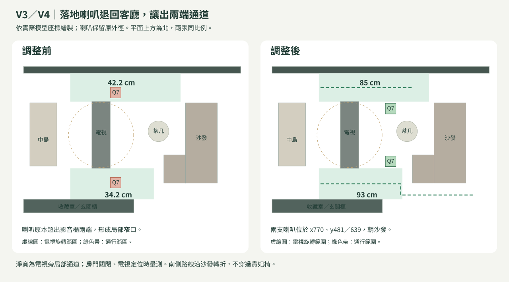
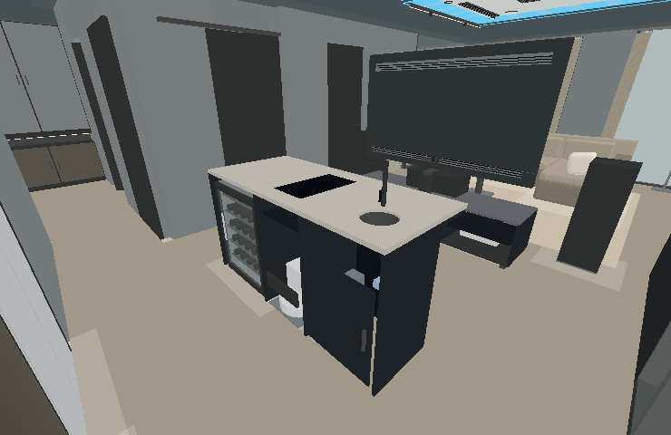
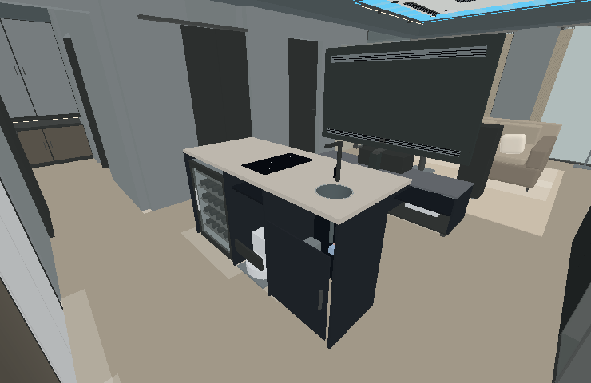

W 夢想之家 · 2026 / 09 / 10
讓通道、模型與操作回到正常
本次針對實際提出的四個問題修正。喇叭擺位只調整 V3／V4；中島表面、開門與操作修正由四版共用。
落地喇叭移回客廳內
保留 KEF Q7 的 31.7 × 31.5 × 100.1 公分外徑，從影音櫃南北兩端移入客廳，仍朝向沙發。
電視旁局部北側淨帶約 42.2 → 85 公分；南側約 34.2 → 93 公分。電視旋轉包絡與兩支喇叭不相交。IH 不再與石材重疊
石材維持 95 公分高，爐面為 95.4 公分；較小底殼放入原開孔，玻璃邊緣覆在石材上。接水槽補完整內膽、薄金屬唇與落水管。
用實際模型射線檢查槽內深度、槽邊接合及爐面九個取樣點，避免只檢查外框尺寸。3D 檢視連續移動
按住 WASD 後，每幀按經過的時間移動，取消鍵盤連發的一次 15 公分跳動。預設流暢畫質，陰影圖以最多每 150 毫秒更新的方式重用。
「顯示設定」仍可選精細；精細模式移動時暫停接觸陰影取樣，停下再恢復。此處驗證渲染呼叫數，未量測實機 GPU 幀率。門片開到 90 度後能通過
主臥入口門回到原本的 90 公分門洞，室內平開門統一完整開啟，鉸鏈旁的門片厚度避開門框，門洞尺寸不變。人在門片掃過範圍時先暫停；退開後會繼續開到底。
八扇室內平開門與兩種滑門已測試開啟通行。入戶門外的梯廳仍不在室內步行範圍。喇叭位置前後對照

同一視點的中島模型
下圖由實際模型離線繪製，用於查看幾何。未包含瀏覽器的材質貼圖、反射及真實光照；新版材質請以 3D 設計頁面為準。


本次驗證範圍
- 四版中島表面、完整設備外徑、旋轉電視與喇叭間距。
- 平開門關閉阻擋、90 度開啟通行、遇人暫停後繼續；廚房與客浴滑門實際穿越。
- V3／V4 南北連續步行路線，包含繞過沙發的轉折。
- WASD 連續移動、放鍵與失焦停止；控制項輸入不移動視角。
- 固定碰撞物件按網格篩選，靜止門片不重算幾何包絡；流暢模式不執行全畫面接觸陰影取樣。
查看本次驗證紀錄 · 各版本調整內容
模型修正保留家具外徑與既有牆體；實作設備開孔仍應採原廠模板。此頁未宣稱已完成真實瀏覽器外觀與 GPU 驗收。